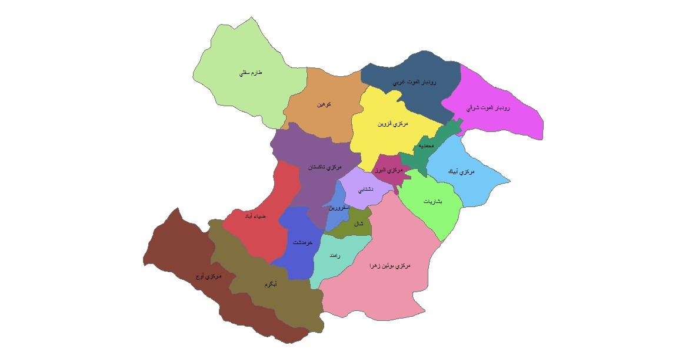
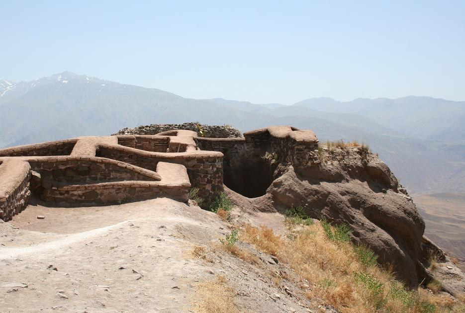
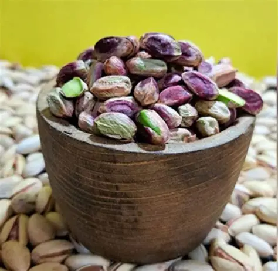
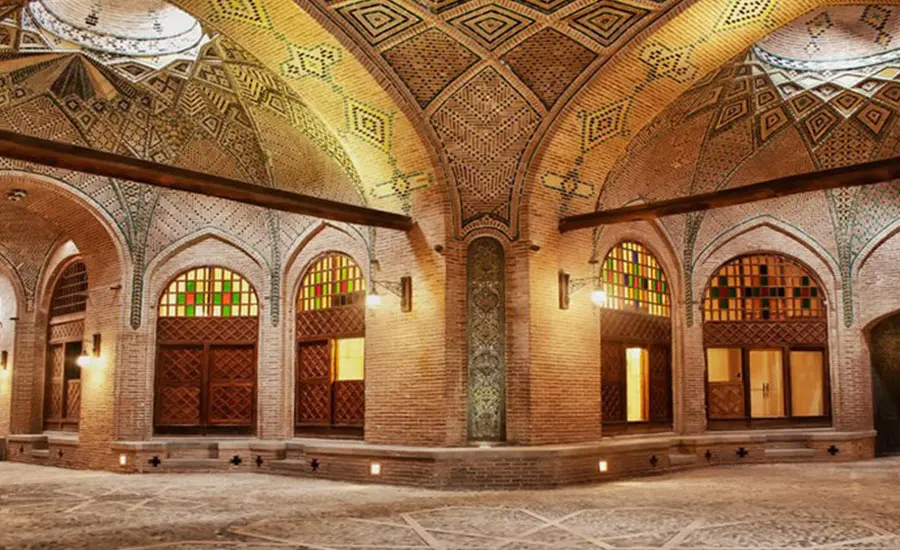
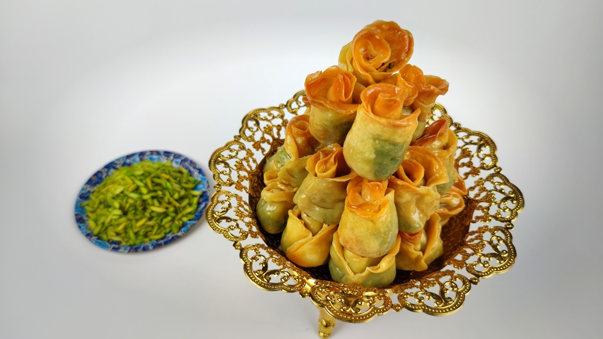

پایتخت خوشنویسی ایران و دولتخانه صفوی
قزوین
۱۵٬۵۹۵ کیلومتر مربع
≈ ۱٫۳۵ میلیون نفر
پایتخت خوشنویسی ایران
قزوین یکی از شهرهای باستانی ایران است که در زمان شاپور ذوالاکتاف رونق یافت. این شهر از زمان شاه تهماسب تا انتقال پایتخت به اصفهان توسط شاه عباس (۱۵۹۸ م)، حدود نیمقرن پایتخت صفویان بود. بناهای باشکوهی چون عمارت چهلستون (کلاه فرنگی) و سردر عالیقاپو در آن خودنمایی میکنند. قزوین به دلیل پرورش استادان بزرگی چون میرعماد حسنی، پایتخت خوشنویسی ایران نامیده میشود.

نمایش قزوین روی نقشهدر دل کوههای البرز شمالی، منطقه افسانهای الموت با قلعه تاریخی حسن صباح قرار دارد. دریاچه اوان با منظره خیرهکننده، نگین طبیعی استان است. قزوین گلوگاه ارتباطی مرکز به غرب و شمال ایران بوده و طبیعتی متنوع از دشت تا کوهستان دارد.

قزوین مهد شیرینیهای سنتی است؛ باقلوا پیچ و پسته آن شهرت جهانی دارند. کاروانسرای سعدالسلطنه امروزه مرکز نمایش صنایع دستی است. از مفاخر بزرگ میتوان به حمدالله مستوفی، عارف قزوینی و شهید رجایی اشاره کرد.

پسته
دریاچه اوان
باقلوا و شیرینی سنتیدژ مشهور اسماعیلیان که حسن صباح در سال ۴۸۳ ه.ق (۱۰۹۰ م) آن را تصرف کرد.
یکی از قدیمیترین مساجد ایران با لایههایی از دورههای مختلف.
مجموعهی تاریخی دوران قاجار با فضای کاروانسرا و بازار، امروز محل صنایع دستی.
کاخ صفوی با طراحی کلاهفرنگی که از دورهی پایتختی قزوین مانده است.
دروازهی ورودی مجموعهی کاخهای صفوی.
دریاچهی کوهستانی در منطقهی الموت با مناظر دیدنی.
باقلوای قزوین شهرت کشوری دارد؛ همچنین قزوین در تولید انگور و کشمش، و ساخت چاقو و ابزار برنده معروف است.